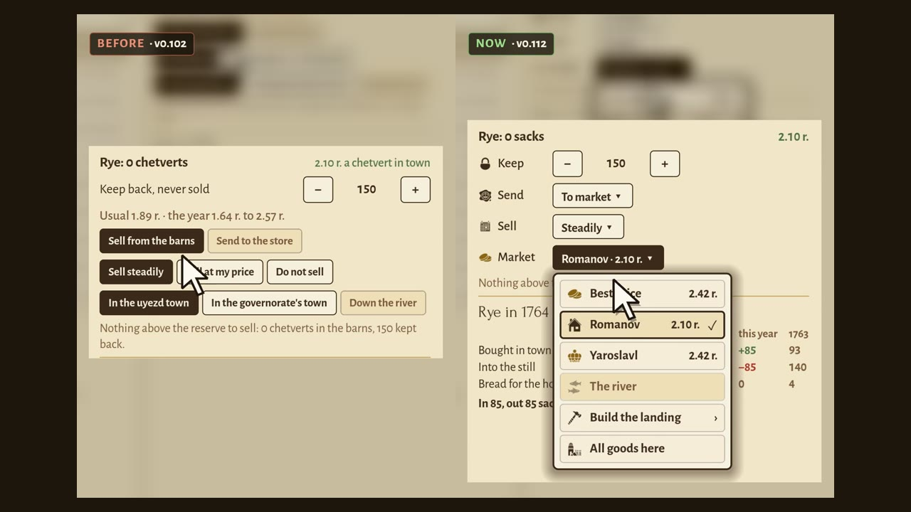
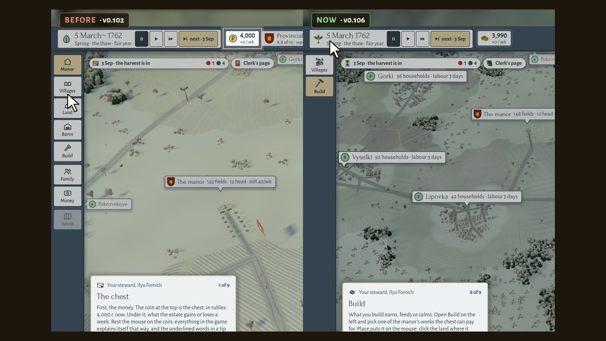

Souls & Estates — стратегия о русском дворянском роде с 1670 по 1861 год. Вы решаете, что должна каждая крепостная деревня, распределяете землю, жените детей и поднимаетесь по Табели о рангах. Игра бесплатная, в браузере и для Windows, на itch.io, на русском и английском.
10 ноября мы принесли её на встречу разработчиков игр и дали людям поиграть. С идеей ни у кого трудностей не было. Трудности были у всех с экраном.
Что нам сказали
- Слишком много текста. Каждая страница была стеной слов, и прочитать её приходилось раньше, чем что-нибудь нажать.
- Русские слова в английской игре. В английской версии стояли латиницей chetvert, sazhen, vedro, obrok, barshchina. Для эпохи они верные, а англоязычному игроку не говорят ничего.
- Всё сразу. Обучение начиналось с шага 1 из 9, а на экране уже были все восемь вкладок, вся верхняя панель и страница цифр.
- Меню, которые раскрываются внутри страницы. Кнопка с вариантами открывала список посреди страницы и сдвигала вниз всё остальное. Замену тоже подсказали на встрече: маленькое всплывающее меню рядом с кнопкой.
Новостью это было только для нас. Мы перестали это замечать, потому что сами знали, что значит каждое слово.
Простые слова (версия 0.104)
В английском тексте больше нет русских слов латиницей. Оброк там теперь rent, барщина — labour. Четверть зерна стала мешком, ведро — bucket, сажень дров — cord, верста — милей, десятина — акром, и числа на экране пересчитываются. Уезд стал district, губерния — province. Оставили только то, что в английском и так есть: Tsar, boyar, Cossack, ruble, kopeck, samovar, kvass, serf и souls.
Такое правило быстро забывается, если его ничто не проверяет, поэтому собственные тесты игры теперь падают, если старое слово снова пролезет в английский текст. В русской версии, конечно, остались оброк, барщина и вёрсты.

Значки и всплывающие меню (с 0.103 по 0.107)
В версии 0.103 появился новый набор значков: 150 жирных одноцветных силуэтов с game-icons.net, которыми можно пользоваться с указанием авторов, и 19 нарисованных нами, среди них одно семейство бюстов для людей. Сплошные формы выбирали нарочно: тонкие контурные значки при 14 пикселях превращаются в пыль.
Версия 0.105 сделала всплывающие меню везде: кнопка, за которой есть варианты, открывает рядом с собой маленькое меню, а щелчок в любом другом месте его закрывает. Условия деревни раньше были таблицей из шести строк прямо на странице. Теперь это одна строка с текущим выбором, а шесть вариантов открываются по щелчку. Версия 0.107 сделала то же со всеми длинными разделами конторы: заметками, садами, сеном, водами, тяжбами.
Дальше всех ушли амбары. Чтобы продать рожь, раньше нужно было пройти три ряда кнопок. С версии 0.112 это четыре короткие строки — «Держать», «Везти», «Продавать», «Рынок», у каждой один значок и одно слово, а рынки с ценами открываются во всплывающем меню. Это сделали через три дня после встречи, когда увидели, что после первых всплывающих меню слов на странице всё ещё слишком много.

Обучение, которое начинается с пустого экрана (0.106)
Обучение теперь начинается с одной только земли и вашего управляющего. Контора появляется по частям, когда управляющий до неё доходит: вкладка деревень, сундук, часы, письма, книга построек, усадьба. Остальные страницы открываются в течение первого года, по одной, и управляющий говорит, когда появилась новая. Открыть её можно сразу или потом.

Ещё две вещи с той недели
- Частота кадров. У игры не было ограничения кадров. На ноутбуке с экраном 240 Гц она просила 240 кадров в секунду и гоняла видеокарту на полную, даже на паузе. В версии 0.108 появились настройка частоты кадров (по умолчанию 60, а когда игра за другим окном — 15) и настройка детализации. На нашем тестовом ноутбуке «Лёгкая» сокращает работу видеокарты на кадр с 12,8 до 6,6 миллисекунды.
- Поля. Крестьяне пахали узкими полосами, а в нашей игре все полосы выглядели одинаково, как полосатые обои. В версии 0.113 у каждой полосы свой оттенок, кое-где другие культуры, а жатва идёт полоса за полосой и оставляет на стерне снопы.
Где она сейчас
Версия 0.114 лежит на itch.io, в браузере и для Windows. Короткие ролики про эти перемены, с тем, как было и как стало, — в нашем плейлисте Souls & Estates, серия «What changed».
Слов всё ещё больше, чем хотелось бы, и некоторым страницам всё ещё нужны две колонки. Если какой-то экран заставляет вас остановиться и читать, когда хотелось просто нажать, скажите, какой: contact@goldenharbourgames.com или комментарии на itch.